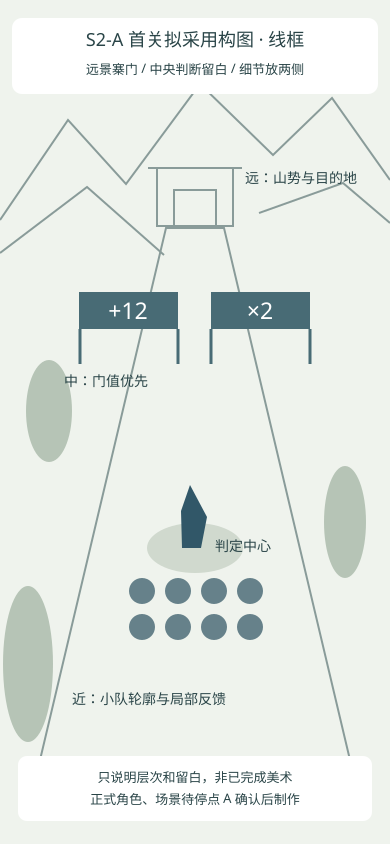

一路长歌 / S2-A / 角色方向认可，游戏呈现待改进
先把一个角色做清楚。
这次沿 A 系比例制作了一名主角：背向战斗、分层行走与拉弓、布衣到头领。用户已认可角色设计，但认为实际测试页面里的小人不好看。友军、敌人和场景仍是草模；下一步优先改善真实游戏中的队伍。
同一个人，从布衣到头领
正面参考，真 alpha；不是战斗立绘。底纹来自网页，未写入 PNG。Cocos 实际动作：站立、走动、射箭、晋升。上方放大观察，下方为战斗尺寸。此动作短片不含音轨；下方完整首关包含实际音轨。
实际手机尺寸
隔离夹具重复显示同一主角，检查人数上限与边缘。它不是已制作的普通友军，也不是正常流程获得 48 人的截图。
 48 人显示，包含队首主角；256 真实人数仍只显示 48。
48 人显示，包含队首主角；256 真实人数仍只显示 48。
可读性与第一关构图
 青线来自实际命中范围；可见护板覆盖完整宽度。危险地面提示不会盖住人物与门值。Boss 仍为草模。
青线来自实际命中范围；可见护板覆盖完整宽度。危险地面提示不会盖住人物与门值。Boss 仍为草模。
拟采用的远中近层次。中央留给判断，细节放两侧；山势和寨门尚未正式制作。 碰撞损失直接来自该山石配置，射箭不能摧毁山石。
碰撞损失直接来自该山石配置，射箭不能摧毁山石。实际游戏声音与连续输入
首关连续演示，原速。捕获真实 WebAudio 输出，没有后配音乐。Boss 阶段含 x=0、±0.41、±0.43 的检查。从可交互首页开始的前十秒，实际音轨保留。浏览器证据不代表微信真机验收。角色方向已认可；游戏尺寸下的小人与队伍呈现未通过。